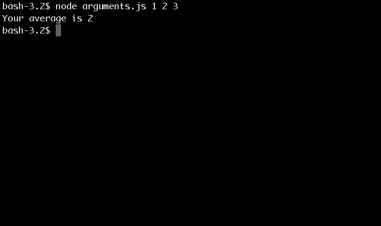

Passing in Arguments
Ok, so now we are making some headway. Time to think back to your Operating Systems class.. Oh What was that?.. You never took Operating Systems or you slept through that class? That's OK, it's simple what you have to do. Follow these steps.
At this point I assume you know how to open a terminal window and create a file. So go ahead and create a arguments.js file and load your command line.
1) We are going to create a file that takes in your numeric input and returns the average.
var sum=0;
for (i=2; i < process.argv.length; i++)
{
sum += Number(process.argv[i]);
}
var avg = sum / (i-2);
console.log("Your average is " + avg);Did you see something different in the for loop? We'll get to that in a little bit. Firstly we know JavaScrpt in the web browser works off of the DOM and in a similar manner Node.js works off of the PROCESS object. A main thing to note about the PROCESS object is that it has an array property that contains the complete command line. i.e. The number we entered.
Now back to the for-loop. Did you notice anything else unusual? How about the fact that we started at
i = 2;i = 0;Also lets note that everything that is passed into the arguments array is consider a string, so therefore when we sum the numbers from a command line, we need to use:
sum += Number(process.argv[i]);2) From this point we will engage node.js and enter arguments by typing:
node arguments.js 1 2 3Now we know with our human brains that (1+2+3 / 3 = 2, but does Node.js know that? Well you should have gotten something like this back:

Now its time for a challenge!
Lets code Node.js to read in a file and return the number of sentences. Click Here